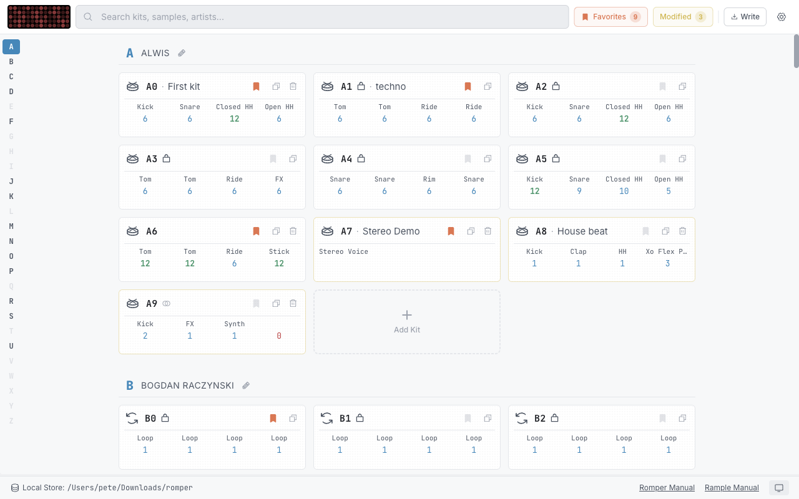
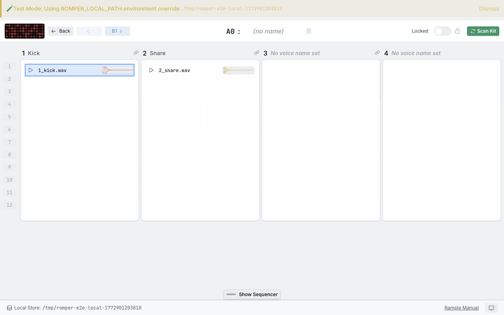

Romper
Sample kit manager for the Squarp Rample
Browse 26 banks of kits. Audition all 4 voices. Drag in new samples. Sync to SD card. Done.

The Squarp Rample is a 4-voice eurorack sample player with 26 kit banks on an SD card. Managing the folder structure by hand is tedious and error-prone — Romper gives you a proper desktop interface for it.
All 26 Banks at a Glance
See every kit across banks A–Z with 4 voice slots per card. Color-coded sync status shows you what's changed at a glance.
Audition Before You Sync
Play samples directly in the app. Use the built-in XOX step sequencer to hear all 4 voices together before committing to your SD card.
Drag, Drop, Done
Drag .wav files onto voice slots. Romper handles folder naming, supports up to 12 layers per voice, and works with mono and stereo samples.
Safe SD Card Sync
Non-destructive reference-based editing. Samples only copy on sync. Automatic backup and validation keep your card safe.
How It Works
Point Romper at Your SD Card
Romper reads the existing Rample folder structure and imports your kits automatically. Start from your current SD card, factory samples, or a blank library.
Build and Audition Kits
Each kit has the familiar 4-voice layout with up to 12 sample slots per voice. Drag samples in, rearrange, and preview with the built-in step sequencer.
Sync and Play
Sync validates your kits, converts formats if needed, creates a backup, and writes to the SD card. Eject, slot it into your Rample, and go.
See It In Action
Kit browser — all 26 banks with sync status at a glance

Kit detail — 4 voice slots, sample layers, and built-in sequencer
Latest Features
Download Romper
Free and open source. Available for macOS, Windows, and Linux.